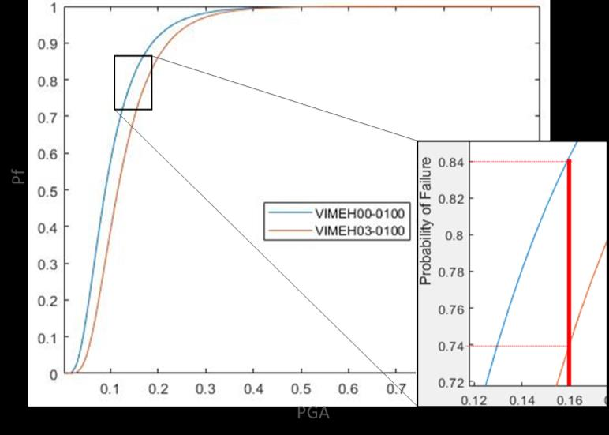

Writing · Seismic design
Change the use, change the risk
A building is designed once. Its mass distribution is not fixed for life — and the codes that check for irregularity only ever looked at it once.

Seismic codes carry provisions for mass irregularity. ASCE 7 defines a vertical mass irregularity where the effective mass of any storey exceeds 150% of an adjacent storey, excepting a roof lighter than the floor below. Find one, and you lose the right to use the simpler analysis procedures; you are pushed toward a modal or a response-history analysis, and the detailing requirements tighten.
That check happens at design. It happens once.
Then the building is occupied, and it starts changing.
The floor that became storage
An office floor is designed for a live load somewhere around 2.4 kPa. A storage occupancy can be five times that. Nobody demolishes anything to make the change — a tenant moves out, a new one moves in with dense filing, server racks, plant, or archive shelving, and the floor now carries a mass the original designer never distributed into the model.
If it happens on one floor of many, you have manufactured a vertical mass irregularity in a building that was analysed and detailed as regular. If it happens across part of a floor plan, you have manufactured a plan irregularity, which shifts the centre of mass away from the centre of rigidity and introduces torsion that was not there before.
Neither triggers a structural review. Change of use goes through planning and fire and accessibility. It rarely goes back through seismic analysis, because nothing was structurally altered — and in the usual sense, nothing was.
What it actually does
The interesting question is not whether this creates an irregularity on paper. It plainly can. The question is how much it moves the fragility — the probability of exceeding a damage state at a given shaking intensity.
That is what we set out to quantify: take reinforced-concrete frame structures, introduce plan and vertical mass irregularity of the kind a use change produces, and derive fragility curves for each configuration rather than reasoning from the code trigger alone.
Two things come out of it worth stating plainly.
The first is that the effect is not symmetric. Where the added mass sits matters as much as how much of it there is. Mass added low in a structure behaves very differently from the same mass added high, and eccentric mass in plan does something different again from mass added uniformly across a floor.
The second is that the code trigger is a threshold, not a measure. The 150% rule tells you when to stop using the equivalent lateral force procedure. It does not tell you how much more likely the structure is to be damaged — and two buildings that both just cross the threshold do not carry the same risk.
Why this is a fragility problem
A code check returns a verdict: compliant or not. A fragility curve returns a probability across the whole range of intensities, which is a different kind of answer and a more useful one when the question is about an existing building rather than a proposed one.
For a new design, compliance is the right frame — meet the provisions and the structure is acceptable. For a building that has already changed use, the owner is not asking whether it complies with a procedure selection rule. They are asking how much worse off they are, and whether it is worth doing anything about it. Fragility answers that; a threshold does not.
It also lets you compare. If the same floor could be converted at level 2 or at level 6, the fragility curves for those two options are directly comparable in a way that "both are irregular" is not.
The limits
The results are for the frame configurations studied, under the ground motion set used. They are not a general coefficient you can apply to any building — and that is a real limitation, not a formality. The value is in the method and in the direction of the effects, not in a number to be looked up.
What generalises is the observation underneath: seismic vulnerability is a property of a building's current state, not of the drawings it was approved from. Most of our assessment machinery assumes those are the same thing. For a building more than a few years old, they usually are not.
Based on: Ghanem, A., Lee, Y.-J., & Moon, D.-S. (2024). Seismic vulnerability of reinforced concrete frame structures: Obtaining plan or vertical mass irregularity from structure use change. Journal of Structural Engineering, 150(3). DOI: 10.1061/JSENDH.STENG-12440